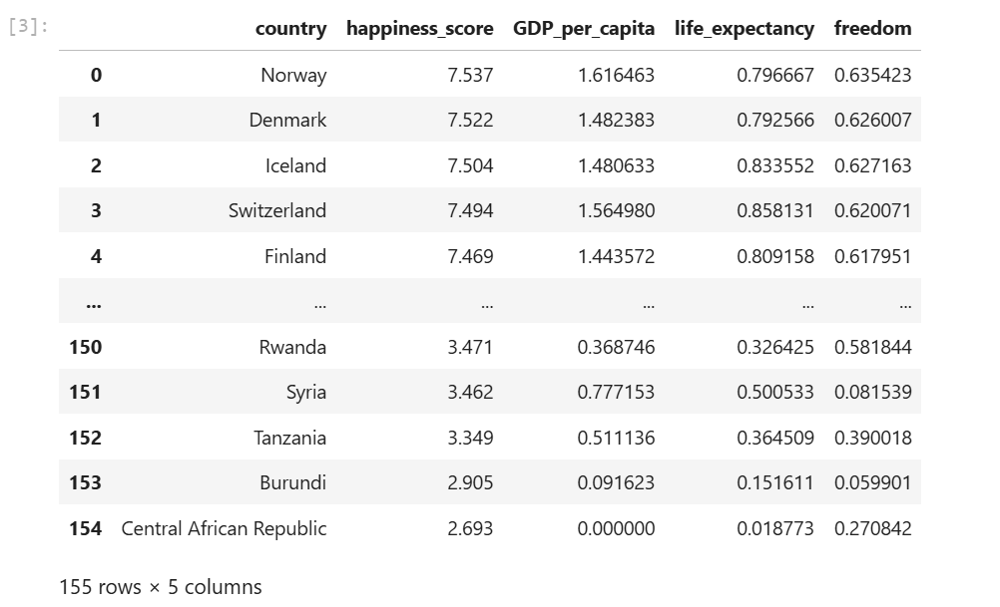
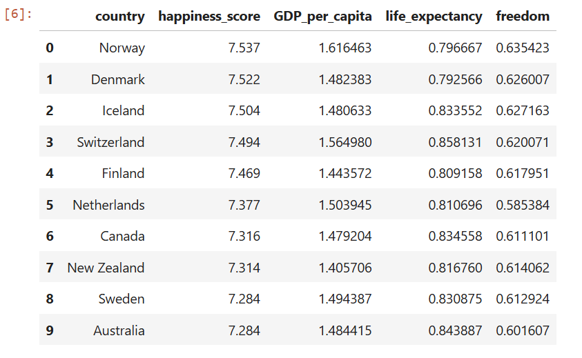
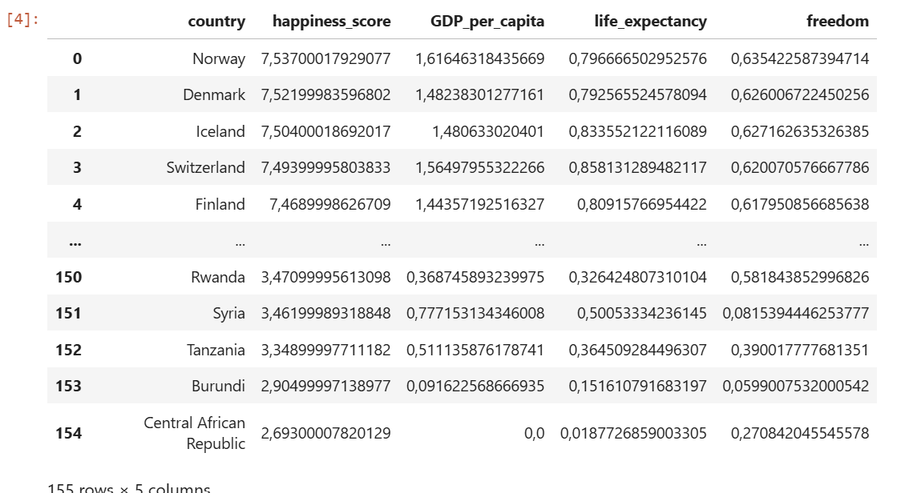
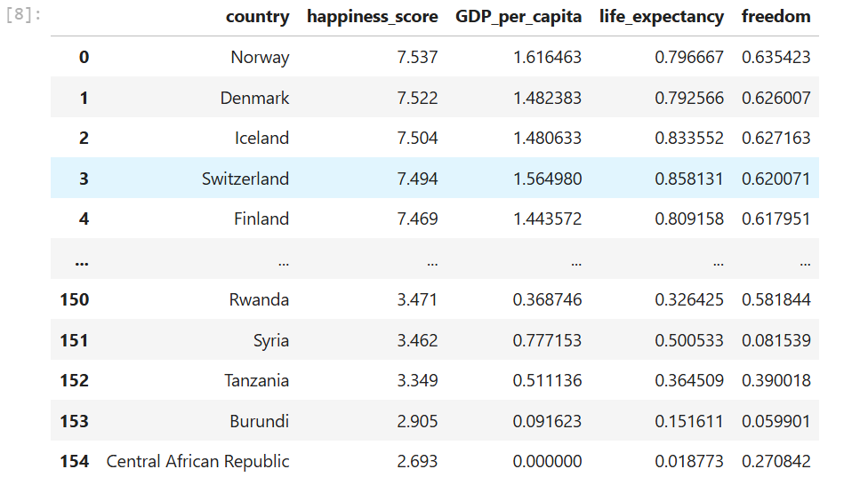
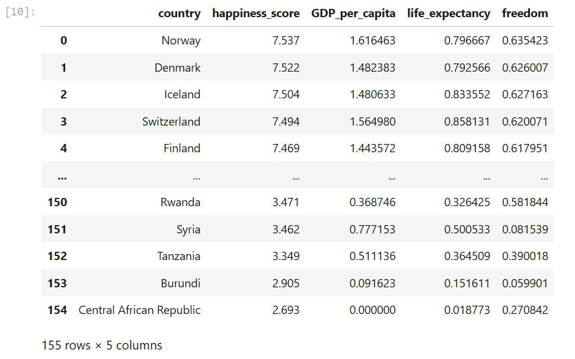
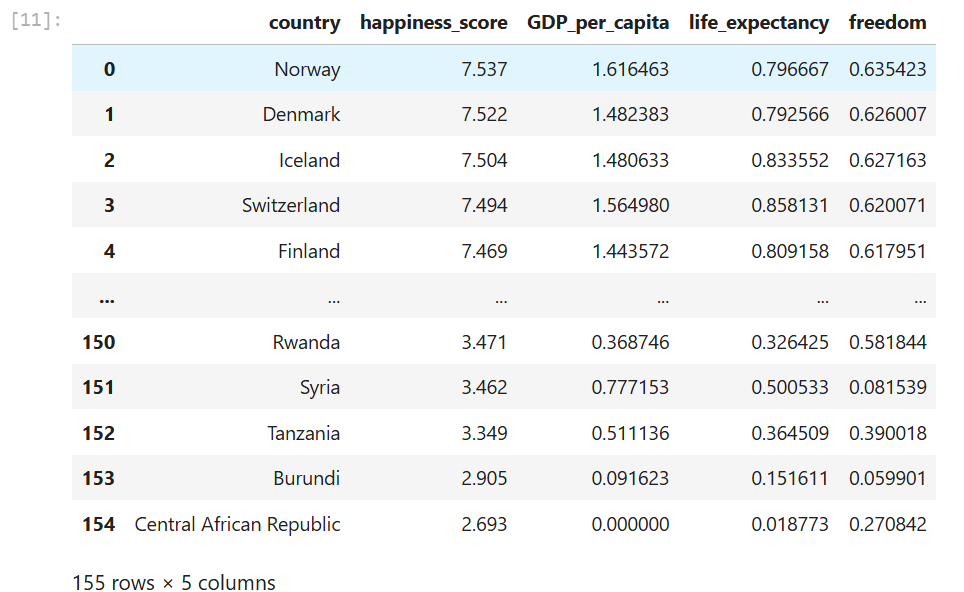
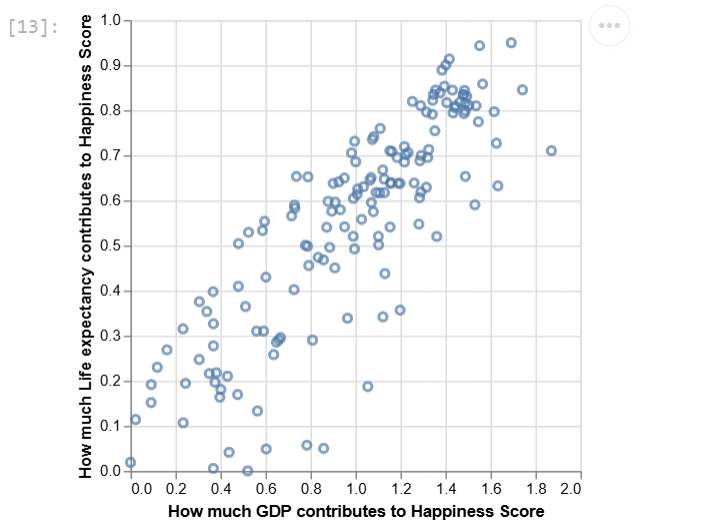
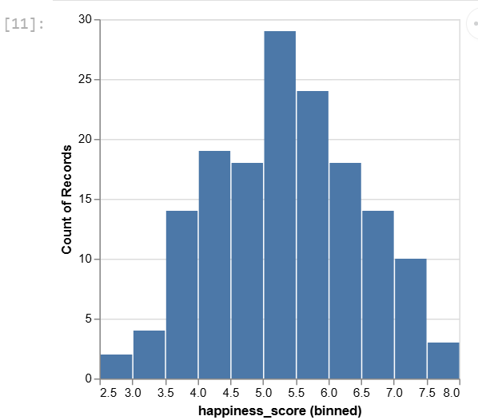

<div class="css-a9o3ew-toggleDetails__content"><span dir="ltr" class="css-wxpmja-view"><div class="user_content enhanced" data-testid="assignments-2-assignment-toggle-details-text"><p><strong>EECS690 Mini-Project 2a: Reading Data</strong></p>
  <p>Learning objectives: <span>In this project, you will learn how to</span></p>
  <ul>
  <li>Read data in different formats into Python using different read functions</li>
  <li>Visualize data using Altair</li>
  </ul>
  <p>All datasets for this mini-project are placed in the Canvas folder called <code>Data files</code>. The data is from a case study entitled Happiness Report (the case study is at the bottom).</p>
  <p><strong>Tasks</strong></p>
  <p><strong>1. Load datasets: </strong>Load the dataset happiness report<strong> </strong>with various arguments (e.g., file path, <code>sep</code>, <code>names</code>, <code>skiprows</code>). There are multiple versions of the file. Practice reading all:</p>
  <ul style="list-style-type: disc;">
  <li><code>happiness_report.csv</code></li>
  <li><code>happiness_report_semicolon.csv</code></li>
  <li><code>happiness_report_metadata.csv</code></li>
  <li><code>happiness_report.xlsx</code></li>
  <li><code>happiness_report_no_header.csv</code> (but add headers; place the result in DF <code>happy_header</code>)</li>
  </ul>
  <p><strong>2. Visualization:</strong> Using DF <code>happy_header</code>, plot <code>life_expectancy</code> (y-axis) vs. <code>GDP_per_capita</code> (x-axis). Provide appropriate titles for each axis. Using <code>happiness_report_metadata.csv</code> file prepare a bar chart. See sample output.</p>
  <p><strong>Expected Deliverables</strong></p>
  <p>A file named <code>foo.ipynb</code> where <code>foo</code> is your last name in lower case letters. Your program should be reading the data files from a relative folder <code>data/</code></p>
  <p><strong>Grading Rubric</strong></p>
  <p>1. <span style="color: #e03e2d;">Data loading</span> (correctly loading each file), 5 points each, for a total of 25 points</p>
  <p>2. <span style="color: #e03e2d;">Visualization</span> (correctly producing <code>mark_point</code> and <code>mark_bar</code> visualizations), 5 points each for a total of 10 points</p>
  <hr>
  <p><strong>Sample output</strong></p>
  <p>CVS file output</p>
  <p></p>
  <p>Top 10 records of the CVS file</p>
  <p></p>
  <p>Semicolon separated output</p>
  <p></p>
  <p>Tab separated file output</p>
  <p></p>
  <p>Metadata file output</p>
  <p></p>
  <p>The <code>happy_header</code> DF with its headers</p>
  <p></p>
  <p>A plot of the <code>happy_header</code> DF using Altair's <code>mark_point</code> function</p>
  <p></p>
  <p>A plot of the <code>happiness_report_metadata.csv</code> using Altair's <code>mark_bar</code> function</p>
  <p></p>
  <hr>
  <p><span style="color: #236fa1;">Happiness Report Case Study (2017)</span></p>
  <p><span style="color: #236fa1;">This data was taken from Kaggle and ranks countries on happiness based on rationalized factors like economic growth, social support, etc. The data was released by the United Nations at an event celebrating International Day of Happiness. According to the website, the file contains the following information:</span></p>
  <ul>
  <li><span style="color: #236fa1;">Country = Name of the country.</span></li>
  <li><span style="color: #236fa1;">Region = Region the country belongs to.</span></li>
  <li><span style="color: #236fa1;">Happiness Rank = Rank of the country based on the Happiness Score.</span></li>
  <li><span style="color: #236fa1;">Happiness Score = A metric measured by asking the sampled people the question: "How would you rate your happiness on a scale of 0 to 10 where 10 is the happiest?"</span></li>
  <li><span style="color: #236fa1;">Standard Error = The standard error of the happiness score.</span></li>
  <li><span style="color: #236fa1;">Economy (GDP per Capita) = The extent to which GDP contributes to the calculation of the Happiness Score.</span></li>
  <li><span style="color: #236fa1;">Family = The extent to which Family contributes to the calculation of the Happiness Score.</span></li>
  <li><span style="color: #236fa1;">Health (Life Expectancy) = The extent to which Life expectancy contributed to the calculation of the Happiness Score.</span></li>
  <li><span style="color: #236fa1;">Freedom = The extent to which Freedom contributed to the calculation of the Happiness Score.</span></li>
  <li><span style="color: #236fa1;">Trust (Government Corruption) = The extent to which Perception of Corruption contributes to Happiness Score.</span></li>
  <li><span style="color: #236fa1;">Generosity = The extent to which Generosity contributed to the calculation of the Happiness Score.</span></li>
  <li><span style="color: #236fa1;">Dystopia Residual = The extent to which Dystopia Residual contributed to the calculation of the Happiness Score.</span></li>
  </ul>
  <p><span style="color: #236fa1;">To clean up the file and make it easier to read, we only kept the country name, happiness score, economy (GDP per capita), life expectancy, and freedom. The happiness scores and rankings use data from the Gallup World Poll, which surveys citizens in countries from around the world.</span></p>
  <p><span style="color: #236fa1;">Kaggle stores this information, but it is compiled by the Sustainable Development Solutions Network. They survey these factors nearly every year (since 2012) and allow global comparisons to optimize political decision-making. These landmark surveys are highly recognized and allow countries to learn and grow from one another. One day, they will provide a historical insight on the nature of our time.</span></p>
  <p>&nbsp;</p></div></span></div>